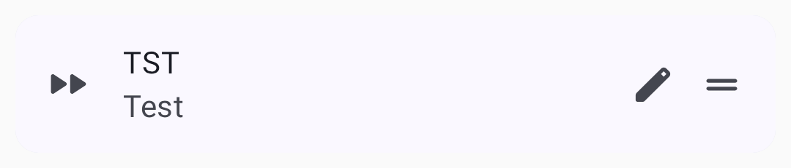
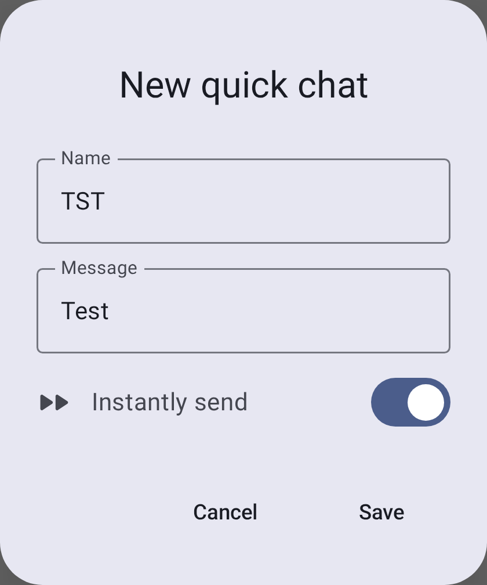
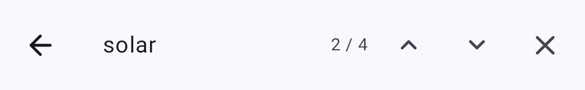
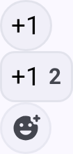

Сообщения и каналы
Meshtastic поддерживает два режима связи: вещание по каналам и личные сообщения.
Каналы
Каналы - это общие группы для связи. Все узлы, настроенные с одинаковым ключом канала, могут читать и отправлять сообщения в этом канале.
Канал по умолчанию
Каждое устройство Meshtastic имеет канал LongFast по умолчанию. Это незашифрованный канал, используемый для общей связи в ячеистой сети.
Безопасность канала
Каналы поддерживают несколько уровней шифрования:
| Иконка | Уровень безопасности | Описание |
|---|---|---|
| 🔒 | PSK (256-bit AES) | Полностью зашифрован надёжным предварительно согласованным ключом. Только узлы с соответствующим ключом могут читать сообщения. |
| 🔐 | PSK (128-bit AES) | Зашифрован более коротким ключом. Безопасен для большинства задач, но 256-битное шифрование предпочтительнее для конфиденциальных данных. |
| 🔓 | По умолчанию / Открытый | Использует общеизвестный ключ по умолчанию. Любое устройство Meshtastic с той же пред установкой может читать эти сообщения. |
| ⚠️ | Незащищённый + Местоположение | Открытый канал, который также передаёт ваше GPS-местоположение. Используйте с осторожностью в общественных ячеистых сетях. |
🔒 Совет по безопасности: Всегда настраивайте уникальный PSK для личных сообщений. Канал по умолчанию намеренно открыт, чтобы новые пользователи могли обнаружить mesh-сеть — но вам следует создать отдельный зашифрованный канал для любой конфиденциальной информации.
Добавление канала
- Перейдите в Настройки → Каналы.
- Нажмите Добавить канал или сканируйте QR-код.
- Настройте имя канала и ключ шифрования.
- Поделитесь URL-адресом/QR-кодом канала с теми, кому нужен доступ.
При нажатии на канал отображаются его сведения и опции для отправки приглашения.
Личные сообщения
Личные сообщения (DMs) — это зашифрованная связь точка - к - точке между двумя конкретными узлами.
Отправка личного сообщения
- Откройте вкладку Сообщения.
- Выберите ноду из списка контактов или нажмите на ноду в списке нод.
- Введите сообщение и нажмите “Отправить”.
Состояние сообщения
Метка статуса отображается только под твоими исходящими сообщениями (входящие сообщения от других не имеют метки статуса):
| Состояние | Значение |
|---|---|
| Отправка… | В очереди или уже передано на радио, результат ещё не определён (для статусов “в очереди” и “в пути»” отображается одинаковый текст) |
| Доставлено получателю | Самое надёжное подтверждение для личного сообщения — получено подтверждение о доставке |
| Отправлено в сеть | Для широковещательного сообщения в канале — сообщение достигло mesh-сети (у широковещательных сообщений нет подтверждений для каждого получателя) |
| Передано, не подтверждено получателем | Для личного сообщения, отображается предупреждающим цветом — сообщение было ретранслировано, но подтверждение ещё не получено |
| Маршрутизация по SF++ цепочке… | Находится в процессе маршрутизации/буферизации в цепочке Store & Forward Plus Plus |
| Подтверждено в цепочке SF++ | Подтверждена доставка через цепочку SF++ |
| Ошибки | Ошибка доставки — нажмите на статус, чтобы узнать конкретную причину (см. раздел «Ошибки доставки» ниже) |
Ошибки доставки
Когда сообщение не удаётся доставить, индикатор ошибки показывает, что пошло не так:
| Ошибки | Значение | Что делать |
|---|---|---|
| Нет маршрута | Путь к целевой ноде отсутствует | Получатель может быть не в сети или вне зоны действия mesh-сети. Повторите попытку позже или подойдите ближе. |
| Получен NAK | Следующая нода отказалась ретранслировать | Ретранслирующая нода может быть перегружена. Подождите и повторите попытку. |
| Время ожидания истекло | Нет подтверждения в пределах окна повторных попыток | Получатель, возможно, находится сразу за пределами зоны досягаемости. Попробуйте увеличить лимит хопов или переместиться в место с лучшим сигналом. |
| Нет интерфейса | Нет доступного радиоинтерфейса для отправки | Проверь, подключено ли твоё радио и настроен ли канал. |
| Исчерпаны повторные передачи | Все попытки повторной отправки исчерпаны | Путь в mesh-сети ненадёжен. Попробуйте другой канал или дождитесь улучшения условий. |
| Нет канала | Канал назначения не существует | Убедитесь, что обе ноды используют одинаковую конфигурацию канала. |
| Слишком большое | Сообщение превышает максимальный размер полезной нагрузки | Сократите сообщение (максимум ~200 символов). |
| Без ответа | Нода получила сообщение, но не ответила | Радио получателя может быть занято или находиться в спящем режиме с низким энергопотреблением. |
| Ограничение рабочего цикла | Достигнут региональный лимит эфирного времени | Твоё радио исчерпало разрешённое время передачи. Дождитесь сброса окна рабочего цикла (обычно 1 час в регионах ЕС). |
| Неверный запрос | Повреждённое или недействительное сообщение | Обычно это указывает на программную ошибку. Попробуйте перезапустить приложение. |
💡 Совет: Большинство ошибок доставки разрешаются сами собой. Если нода доступна с перебоями, mesh-сеть будет повторять попытки. При постоянных ошибках «Нет маршрута» проверьте, что промежуточные ноды-роутеры находятся в сети.
Функции сообщений
Быстрый чат
Заранее подготовленные сообщения для быстрой связи:
- Доступ через кнопку “Быстрый чат” в области ввода сообщения
- Выберите из встроенных фраз или собственных сообщений
- Настройте сообщения быстрого чата в Настройки → Быстрый чат
- Полезно, когда набирать текст неудобно (перчатки, маленький экран, срочность)

Каждая запись быстрого чата имеет короткое Имя (надпись на кнопке), Сообщение, которое она вставляет, и переключатель “Отправить сразу” — когда он включён, нажатие кнопки немедленно отправляет сообщение, а не помещает его в поле ввода для редактирования:

Список каналов показывает каждый канал с предпросмотром последнего сообщения.
Поиск сообщений
Ты можешь искать по всей истории любой переписки прямо на экране чата:
- Откройте переписку (канал или личное сообщение).
- Нажмите значок поиска в верхней панели.
- Введите текст в поле “Поиск сообщений…”. Поиск выполняется по мере твоего ввода по всем сохранённым сообщениям в этой переписке.
- Используйте счётчик результатов N / M и стрелки вперёд / назад для перехода между совпадениями, которые подсвечиваются в переписке.

💡 Совет: Поиск полнотекстовый и ограничивается перепиской, из которого ты его открыл — он не ищет по другим каналам или контактам. Он сопоставляет текст с сообщениями, уже сохранёнными на твоём устройстве, поэтому работает полностью офлайн.
Пузырьки сообщения
Сообщения отображаются в виде пузырьков чата — отправленные справа, полученные слева. В каждом пузырьке отображаются отправитель, время и статус доставки. Сообщения с ответами содержат цитируемый предпросмотр исходного сообщения над ответом.
Форматирование текста
Сообщения поддерживают облегчённую встроенную разметку Markdown. Полученные сообщения отображают оформление со скрытыми символами синтаксиса:
| Тип | Синтаксис | Отображается как |
|---|---|---|
| Жирный | **жирный** | жирный |
| Курсив | *курсив* | курсив |
| Зачёркнутый | ~~зачёркнутый~~ | |
| Встроенный код | `код` | моноширинный код |
| Ссылка | [текст](https://example.com) | нажимаемая ссылка |
При создании сообщения установите фокус на поле ввода и введите не менее трёх символов — под полем появится панель форматирования. Выделите текст и нажмите на стиль, чтобы применить его (повторное нажатие убирает форматирование); если текст не выделен, будет вставлена пустая пара символов разметки, а курсор окажется между ними. Кнопка вставки ссылки открывает диалог для ввода URL-адреса. В процессе твоего набора черновые стили отображаются в поле, но в самом тексте сохраняются символы Markdown.
💡 Совет: Форматирование передаётся по mesh-сети как есть — теми же байтами, что и iOS. Клиенты, не поддерживающие Markdown (старые приложения, простые клиенты на прошивке), отобразят сырые символы
**/~~. URL-адреса, адреса электронной почты и номера телефонов всё равно автоматически становятся ссылками независимо от того, используете ли вы Markdown.
Упоминания
Введите @ при написании сообщения, чтобы упомянуть ноду — по мере твоего ввода будет появляться список подходящих контактов. В полученном сообщении упоминание отображается как выделенный элемент с именем ноды; нажмите на него, чтобы сразу перейти на страницу сведений о ноде.
Реакции
Реагируйте на сообщения с помощью эмодзи:
- Нажмите и удерживайте сообщение, чтобы открыть меню действий
- Нажмите “Добавить реакцию”, чтобы выбрать эмодзи
- Реакции появляются под пузырьком сообщения
- Несколько пользователей могут отреагировать на одно и то же сообщение
- Реагируйте на свои сообщения или сообщения других

💡 Совет: Реакции очень лёгкие — они потребляют гораздо меньше трафика mesh-сети по сравнению с полными текстовыми сообщениями.
Действия с сообщениями
Нажмите и удерживайте любое сообщение, чтобы получить доступ к:
- Копировать — скопировать текст сообщения в буфер обмена
- Ответить — процитировать сообщение в твоём ответе
- Реагировать — добавить реакцию-эмодзи
- Перевести — перевести полученное сообщение на язык твоего устройства и переключаться между оригиналом и переводом (только в сборке Google Play; используется встроенный перевод)
- Удалить — удалить отправленное тобою сообщение (локальное удаление)
Приоритет сообщений
Сообщения ставятся в очередь и передаются в соответствии с приоритетом:
- Экстренные/аварийные сообщения (наивысший)
- Личные сообщения
- Широковещательные сообщения в канале (самый низкий)
Ограничения сообщений
- Максимальная длина: 200 байт (примерно 200 символов для текста в ASCII)
- The 200-byte cap applies to the in-app composer — the mesh payload limit itself is ~233 bytes, so messages from other senders (e.g., App Functions or Android Auto) may arrive slightly longer
- Ограничение скорости: Mesh-сеть обеспечивает справедливое распределение эфирного времени; большой объем сообщений может быть ограничен
- Доставка: Сообщения автоматически повторяются при отсутствии подтверждения
Рекомендации
- Используйте каналы для координации в группах
- Используйте личные сообщения для приватного общения один на один
- Пишите короткие сообщения — пропускная способность mesh-сети ограничена
- Настройте шифрование для конфиденциальной связи
Связанные темы
- Ноды — нажмите на ноду, чтобы начать личный чат
- Настройки — Радио и пользователь — настройка шифрования каналов и пресетов
- MQTT — мост для передачи сообщений канала в интернет
- Конфигурация каналов — подробные параметры каналов на meshtastic.org